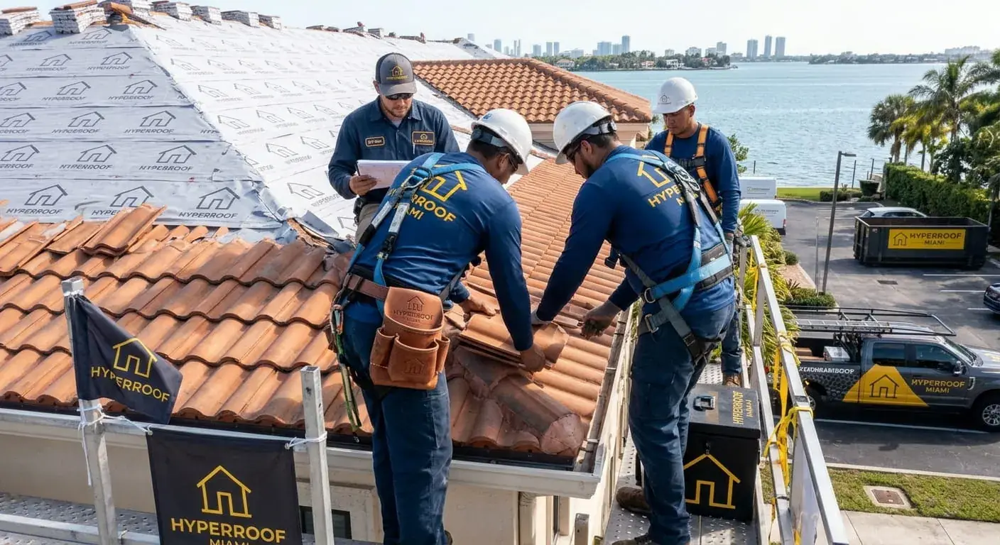

Miami Roofing Resource Center
Use this page to find practical roofing information and official public resources for Miami-Dade property owners. Permit requirements, product approvals and inspection steps can depend on the property's location and the scope of work. Confirm current requirements with the responsible building department before starting a project.
Roof permits and local requirements
Roof repair and replacement work may have permit, inspection or product-approval requirements. Do not assume that every project is treated the same way. Ask your contractor which approvals apply, who will obtain them and what documents will be provided.
- Miami-Dade County — Roofing Permits
- Miami-Dade County — Product Control and Approvals
- Florida Building Commission — Florida Building Code resources
Storm preparation and roof damage
Before severe weather, review the condition of the roof from a safe location and clear accessible drains and gutters where appropriate. After a storm, avoid walking on the roof. Photograph visible damage from the ground, protect interior belongings from water when safe and contact a qualified professional for an assessment.
Hurricane roof damage guidance · Storm damage repair information · Signs of emergency roof damage
Inspections and maintenance
Inspections can help identify deteriorated materials, damaged flashing, drainage issues and other conditions before they become larger problems. Ask for written findings and photographs where available. A recommendation for full replacement should explain the condition found and why a repair would not be suitable.
Miami roof inspection information · Roof inspection guide · How often to inspect a Florida roof
Repair, replacement and material choices
Repair-versus-replacement decisions should be based on the roof's condition, the extent of damage, material type, installation history and the complete scope of work. Compare written estimates that describe materials, tear-off, permits, inspection responsibilities, warranties and exclusions.
Roof repair · Roof replacement · Repair versus replacement guide · Replacement cost factors · Tile versus shingle roofing
Questions to ask a roofing contractor
- What specific damage did the inspection identify?
- Which materials and installation methods are proposed?
- What permits, product approvals or inspections are required?
- What is included in the written scope and what is excluded?
- How will concealed damage and change orders be documented?
- Which warranties apply and what are their limitations?
Request information about a roofing project
Before submitting an inquiry, gather your property ZIP code, roof type if known, approximate roof age and a short description of the concern. You can use the quote request form to send those details. A submission is not a contract or guarantee of a quote, contractor availability or service.
Request a Roofing Quote